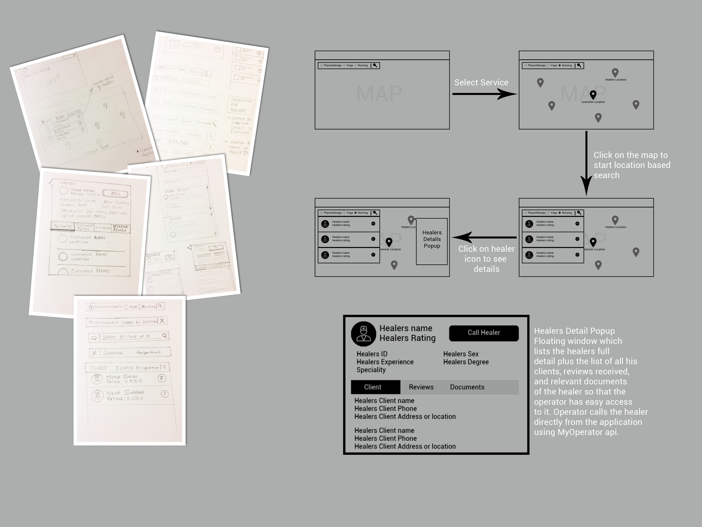

MAYUKH'S PORTFOLIO
HealersAtHome
HealersAtHome is an on demand home healthcare and wellness startup. It provides services like Physiotherapy, Yoga, Nursing and Attendant care. We act as the connecting platform between people requiring home healthcare to those providing it a.k.a healers. Sometimes we call ourselves the UBER of home healthcare.
On joining healers at home I wanted to know how the whole company is operating. This initial research was essential so that when proposing solutions I don't sound out of touch from ground realities. When I joined the team the company was doing close to 2000 home visits per month. The number was growing very fast and it was getting hard to keep up with a small operations team. Quality of service and lead conversion ratio was falling fast. On top of that there was constant attrition from the operations team.
Process Flow
On consultation with the company founder we realised that lead conversion ratio should be improved. Improvement to this metrics would add a lot of value to the company.
The main reason that a lead is not converted is because operations team is not able to find the right healer on time.
Research to understand how the operations team locates the right healer
An operations team member did not have any central healers database to refer. Most of the operators referred to an excel sheet or sheet of paper to find a healer. Finding a healer involved repeatedly calling phone numbers from their sheet of paper and trying to convince the healer to agree to take on the new client.
The number of calls the operator made could go up to as high as ten to fifteen for inexperienced operators. After an operator did this for few months he/she developed a mental database of the healers and could now find healers with less struggle. Once an operator leaves the company we were back to square one as a new operator will have to learn the process again from scratch.
Parameters to find the right healer
1. Client location
2. Healer location
3. Healer qualification and experience
4. Healer Speciality
5. Healer gender as requested by client
6. Healer rating and recently received reviews by clients
7. Healers at Home rating
8. Healer availability
9. Number of clients healer has currently
UX Research

UI sketches and wireframes
Tools and Technologies Used
Photoshop, Principle, HTML, CSS, Javascript( jquery and angularjs ), MyOperator api, Socket.io, Google Map Api, Gulp, Nodejs, Mongodb, Heroku and AWS.
Demo
Redesigning Website
Story